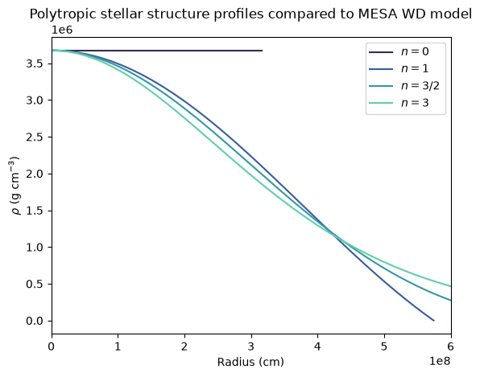
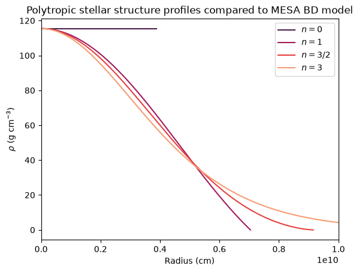

In-Class Assignment 5#
Thursday, September 10, 2026
How to use this notebook:
Locally: Hover over the download symbol then to the ipynb option then right-click to Save Link As to download the file. You can then open the notebook using jupyter notebook ica5.ipynb in your terminal.
Remote: You can open the notebook on Colab by hovering over the rocket symbol then select launch to colab. In doing so, any data needed for the plots can be click and dragged to the online workbook. By default, the file will go to /content/ or /content/sample_data
Credit: Mike Zingale for the Polytrope Routines and Notes.
Comparing Polytropes to MESA models, Interpreting MESA data with TULIPS#
Learning Objectives#
Determine which polytrope model best fits a MESA WD model and interpret those results
Explore situations where Polytrope models can be utilized
Familiarize with plotting tool TULIPS for visualizing time-evolution MESA data
Implementation#
This is our main class that does the integration. We initialize it with the polytopic index, and then it will integrate the system for us. We can then plot it or get the parameters \(\xi_1\) and \(-\xi_1^2 d\theta/d\xi |_{\xi_1}\).
From the readings in HKT 7.1-7.2. We found some of the following relations:
Equation 7.20-7.22:
and
Equation 7.25:
and
import matplotlib.pyplot as plt
import numpy as np
import pandas as pd
class Polytrope:
"""a polytrope of index n"""
def __init__(self, n, h0=1.e-2, tol=1.e-12):
self.n = n
self.xi = []
self.theta = []
self.dtheta_dxi = []
self._integrate(h0, tol)
def _integrate(self, h0, tol):
"""integrate the Lane-Emden system"""
# our solution vector q = (y, z)
q = np.zeros(2, dtype=np.float64)
xi = 0.0
h = h0
# initial conditions
q[0] = 1.0
q[1] = 0.0
while h > tol:
# 4th order RK integration -- first find the slopes
k1 = self._rhs(xi, q)
k2 = self._rhs(xi+0.5*h, q+0.5*h*k1)
k3 = self._rhs(xi+0.5*h, q+0.5*h*k2)
k4 = self._rhs(xi+h, q+h*k3)
# now update the solution to the new xi
q += (h/6.0)*(k1 + 2*k2 + 2*k3 + k4)
xi += h
# set the new stepsize--our systems is always convex
# (theta'' < 0), so the intersection of theta' with the
# x-axis will always be a conservative estimate of the
# radius of the star. Make sure that the stepsize does
# not take us past that.
R_est = xi - q[0]/q[1]
if xi + h > R_est:
h = -q[0]/q[1]
# store the solution:
self.xi.append(xi)
self.theta.append(q[0])
self.dtheta_dxi.append(q[1])
self.xi = np.array(self.xi)
self.theta = np.array(self.theta)
self.dtheta_dxi = np.array(self.dtheta_dxi)
def _rhs(self, xi, q):
""" the righthand side of the LE system, q' = f"""
f = np.zeros_like(q)
# y' = z
f[0] = q[1]
# for z', we need to use the expansion if we are at xi = 0,
# to avoid dividing by 0
if xi == 0.0:
f[1] = (2.0/3.0) - q[0]**self.n
else:
f[1] = -2.0*q[1]/xi - q[0]**self.n
return f
def get_params(self):
""" return the standard polytrope parameters xi_1,
and [-xi**2 theta']_{xi_1} """
xi1 = self.xi[-1]
p2 = -xi1**2 * self.dtheta_dxi[-1]
return xi1, p2
a. Comparing Polytropes to a CO WD MESA model#
Individually/with the person next to you:#
Call the
PolytropeClass to compute the Polytrope solution for a range of indices.
Download the following model files locally. These data were produced using the MESA make_co_wd test suite.
Download#
\(0.6 M_{\odot}\) WD profile data: co_wd_profile.data;
Hint: You can access the varible of the class by calling the class object followed by
.variable. For obtaining \(\xi\) that would bep.xi.
Run the follow cells that will:#
produce a Polytrope of index
nforn=0,1,/3/2,3.From these instances we will compute \(\xi=r/r_n\), \(\theta(\xi)\), and our constant \(\theta_n\).
Next, we will load the data for the MESA profile analysis.
compute \(P_{\rm{c}}\) and \(\rho_{\rm{c}}\) using the central/max values from the
co_wd_profile.dataMESA model firstcompute
r_nusing the central values from the MESA modeluse
r_nto compute the physical radius (\(r=r_n \xi\)) of the polytrope!Use \(\rho_{\rm{c}}\) from the MESA data to compute the density (\(\rho=\theta_{n}\rho_{\rm{c}}\))
We have just computed polytropic profiles for four different indices, all normalized by the MESA WD model!
Plot#
Load the radius \(r\) and density \(\rho\) from the MESA data
plot (and label) them on the same plot as the MESA model from 0 to \(r\approx 1\times 10^9\) cm.
Describe in a few sentences your results.
## 1 results here
# produce a polytrope here
G = 6.67e-8
msun = 2e33 # g
rsun = 6.96e10 # cm
# the n iindex we wish to consider
indices = [0,1,3./2.,3] # n
# an array holding the polytrope call for each index
p_array = [Polytrope(n) for n in indices]
#print(p_array)
xi_array = [p_array[i].xi for i in range(len(indices))]
theta_array = [p_array[i].theta for i in range(len(indices))]
theta_n_array = [theta_array[i]**indices[i] for i in range(len(indices))]
## 2-3 results here
co_wd_profile = pd.read_csv('data/co_wd_profile.data',sep=r'\s+',header=4)
co_wd_profile.columns
co_wd_rhoc = 10**(max(co_wd_profile['logRho']))
co_wd_Pc = 10**(max(co_wd_profile['logP']))
# 4-6 results here - compute r_n here HKT 7.25, given above for reference
r_n_array = [np.sqrt((n+1)*(co_wd_Pc)/(4.*np.pi*G*co_wd_rhoc*co_wd_rhoc)) for n in indices]
r_poly_array = [xi_array[i] * r_n_array[i] for i in range(len(indices))]
rho_poly_array = [theta_n_array[i]*co_wd_rhoc for i in range(len(indices))]
# 7 results here - it will be in units of Rsun so you will need to convert to cm !
co_wd_radius = co_wd_profile['radius'] * rsun
co_wd_density = 10**(co_wd_profile['logRho'])
import seaborn as sns
sns.set_palette("mako", n_colors=4)
# you can uncomment this is you have a retina display and are running locally
#%config InlineBackend.figure_format='retina'
# 8 results here - plot the converted polytrope data and the raw MESA data
labels = [r'$n=0$',r'$n=1$',r'$n=3/2$',r'$n=3$']
for i in range(len(indices)):
plt.plot(r_poly_array[i],rho_poly_array[i],label=labels[i],lw=1.5)
#plt.plot(co_wd_rad_var,co_wd_rho_var,label=r'MESA 0.6 $M_{\odot}$ WD Model',lw=1,ls='-.',color='k')
plt.xlim(0,6e8) # 6,000 km
plt.title(r'Polytropic stellar structure profiles compared to MESA WD model')
plt.legend(fontsize=10,fancybox=True,loc=1)
plt.xlabel(r'$\rm{Radius} \ (\rm{cm})$')
plt.ylabel(r'$\rho \ (\rm{g \ cm}^{-3})$')
plt.show()

With your larger group, try to answer the following:#
Using the above plot, answer the following:
Which polytropic index best fits the CO WD MESA model profile? Is this expected? Comment briefly on the shape of the \(n=0\) and \(n=1\) profiles.
Your thoughtful response goes here.
b. Comparing Polytropes to Brown Dwarf MESA models#
Individually/with the person next to you:#
Call the
PolytropeClass to compute the Polytrope solution for a range of indices.
Download the following model files locally. These data were produced using the make_brown_dwarf test suite.
Download#
\(\sim31 M_{Jupiter}\) Brown Dwarf profile data: 0p03Msun_1RJup_profile.data;
Run the follow cells that will:#
produce a Polytrope of index
nforn=0,1,/3/2,3.From these instances we will compute \(\xi=r/r_n\), \(\theta(\xi)\), and our constant \(\theta_n\).
Next, we will load the data for the MESA profile analysis.
compute \(P_{\rm{c}}\) and \(\rho_{\rm{c}}\) using the central/max values from the
0p03Msun_1RJup_profile.dataMESA model nowcompute
r_nusing the central values from the MESA modeluse
r_nto compute the physical radius (\(r=r_n \xi\)) of the polytrope!Use \(\rho_{\rm{c}}\) from the MESA data to compute the density (\(\rho=\theta_{n}\rho_{\rm{c}}\))
We have just computed polytropic profiles for four different indices, all normalized by the MESA WD model!
Plot#
Load the radius \(r\) and density \(\rho\) from the MESA data
plot (and label) them on the same plot as the MESA model from 0 to \(r\approx 1\times 10^9\) cm.
Describe in a few sentences your results.
## 2-3 results here
bd_profile = pd.read_csv('data/0p03Msun_1RJup_profile.data',sep=r'\s+',header=4)
bd_profile.columns
bd_rhoc = 10**(max(bd_profile['logRho']))
bd_Pc = 10**(max(bd_profile['logP']))
# 4-6 results here - compute r_n here HKT 7.25, given above for reference
r_n_array = [np.sqrt((n+1)*(bd_Pc)/(4.*np.pi*G*bd_rhoc*bd_rhoc)) for n in indices]
r_poly_array = [xi_array[i] * r_n_array[i] for i in range(len(indices))]
rho_poly_array = [theta_n_array[i]*bd_rhoc for i in range(len(indices))]
# 7 results here - it will be in units of Rsun so you will need to convert to cm !
bd_radius = bd_profile['radius'] * rsun
bd_density = 10**(bd_profile['logRho'])
sns.set_palette("rocket", n_colors=4)
# 8 results here - plot the converted polytrope data and the raw MESA data
labels = [r'$n=0$',r'$n=1$',r'$n=3/2$',r'$n=3$']
for i in range(len(indices)):
plt.plot(r_poly_array[i],rho_poly_array[i],label=labels[i],lw=1.5)
#plt.plot(bd_rad_var,bd_dens_var,label=r'1 $M_{Jupiter}$ Brown Dwarf Model',lw=1,ls='-.',color='k')
plt.xlim(0,1e10) #
plt.title(r'Polytropic stellar structure profiles compared to MESA BD model')
plt.legend(fontsize=10,fancybox=True,loc=1)
plt.xlabel(r'$\rm{Radius} \ (\rm{cm})$')
plt.ylabel(r'$\rho \ (\rm{g \ cm}^{-3})$')
plt.show()

With your larger group, try to answer the following:#
Using the above plot, answer the following:
Which polytropic index best fits the Brown Dwarf MESA model profile? Discuss briefly why this assumption might be valid for the WD and the Brown Dwarf.
> hint: what is the specific heat for an ideal gas? denoted as $\gamma$ or $\Gamma$ in pols?
Your response goes here.
c. Visualizing Stellar Structure with Tulips#
To produce plots in the optional exercises we will use mesaplot and Tulips - A Tool for Understanding the Lives, Interiors, and Physics of Stars and the Paper here. Install each by performing the following commands to install them using pip:
‼️ Important
Note
mesaplot is not available on PyPI, so it can be installed using pip as:
pip install git+https://github.com/rjfarmer/mesaplot
Note
py_mesa_reader is not available on PyPI, so it can be installed using pip as:
pip install astro-tulips
Individually/with the person next to you:#
Download (if you have not already)#
This directory which contains a collection of profile data over the course of a \(1M_{\odot}\) model from the pre-main sequence to the formation of a CO white dwarf here.
We will use the tool [TULIPS: A Tool for Understanding the Lives, Interiors, and Physics of Stars] (https://astro-tulips.readthedocs.io/en/latest/index.html) to look at some MESA profile data.
Once the data are download, be sure to unzip them and place them in the correct location and set your path.
Then, run the cells below to load the profile and history datasets.
Note: this will not work as is, you will need to change the path from mine:
SINGLE_M11_DIR;
Run the cell below after successfully loading the data to produce:
property profile diagram of the stellar profile data for \(\eta\), the degeneracy parameter \(\eta=(\mu-m_{e}c^2)/k_{\rm{B}}T\), \(\eta \gg 1\) for strong electron degeneracy.
# Interactive matplotlib plotting for jupyter lab
#%matplotlib inline
# or If you use jupyter notebook
%matplotlib notebook
import matplotlib.pyplot as plt
import mesaPlot as mp
import tulips
# Specify directory of MESA model
SINGLE_M11_DIR = "/Users/carlnotsagan/Downloads/1M_pre_ms_to_wd/LOGS_all"
# create mesa plot instance and pass DIR location to load data
m11 = mp.MESA()
m11.loadHistory(f=SINGLE_M11_DIR)
# pass data to tulips to create our first plots !
#tulips.energy_and_mixing(## pass out loaded profile data here, time_ind=(0,-1,2), cmin=-10, cmax=10, show_total_mass=True,
# show_mix=True, show_mix_legend=True, fig_size=(8,6),
# output_fname='energy_mixing_diagrams')
#plt.show()
#from IPython.display import Video
#Video("energy_mixing_diagrams.mp4", embed=False, width=700, height=600)
#tulips.property_profile(##pass the data object here, time_ind=(0, -1), fps=5, cmin=-5,cmax=50,cmap='viridis',
# property_name='eta', num_rings=100, output_fname='property_diagrams_eta')
#plt.show()
#from IPython.display import Video
#Video("property_diagrams_eta.mp4", embed=True, width=700, height=600)
With your larger group, try to answer the following:#
Using the above plot, answer the following:
Looking at the energy and mixing diagram: where and when is the star undergoing core H-burning, and is it convective?
Your response here.
Looking at the energy and mixing diagram: when does the star becomes a white dwarf? What is the final mass? What could be happening in the intermediate phases?
Your response here.
Looking at the eta evolution when the star is about 0.7Msun remaining, at what mass coordinate can you identify the envelope and the CO core? After subsequent evolution what happens to most of the envelope and how can you tell?
Your response here.